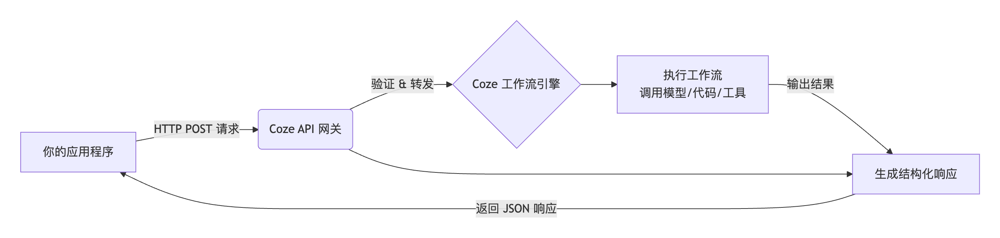
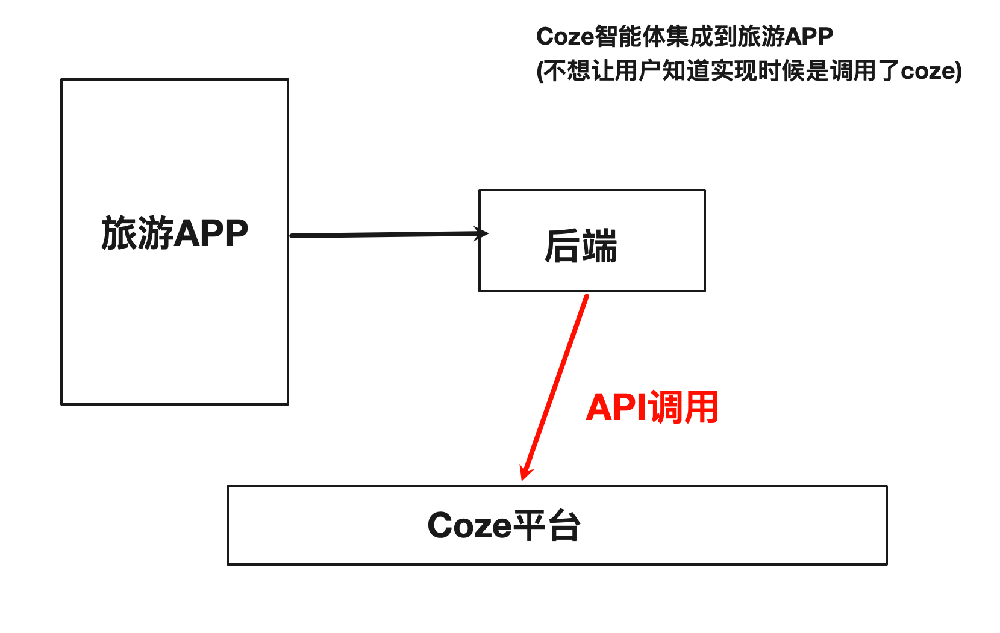
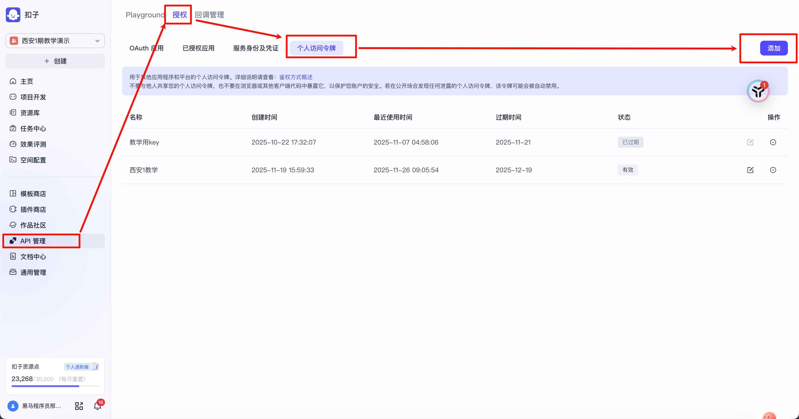
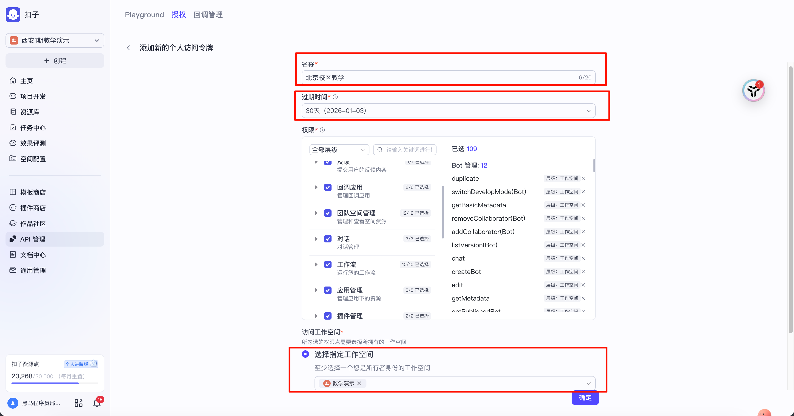
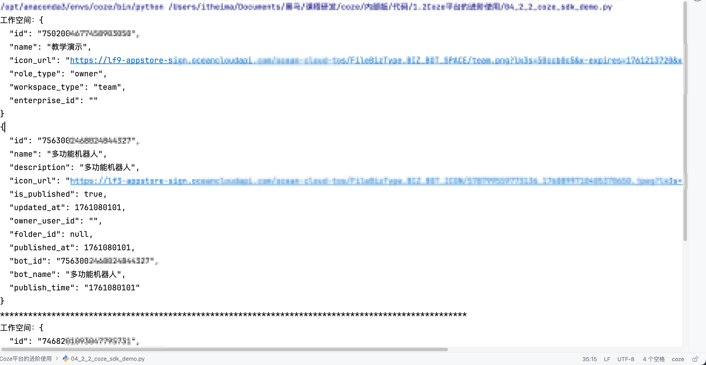
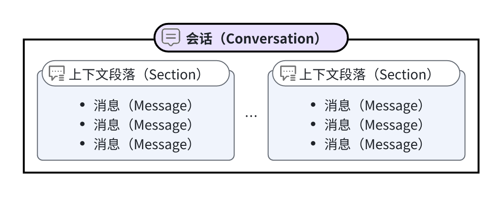

2.3 Coze API调用¶
学习目标¶
- 了解CozeAPI的作用
- 掌握CozeAPI秘钥的创建
- 实现CozeSDK调用机器人
一、 Coze API简介¶
1 什么是API¶
在讲解什么CozeAPI之前，需要先了解什么是API：API就是一组预先定义好的规则、标准和协议。软件或服务提供方通过开放API，允许其他程序在不触碰其底层核心代码和复杂内部逻辑的前提下，安全、规范地使用它的特定功能或数据。
API(Application Program Interface)：
-
编程语言的函数
-
web api
-
其他特殊协议
这带来的巨大好处是极高的效率。开发者无需“重新发明轮子”，可以像拼乐高一样，专注于自己的核心业务，同时灵活集成全世界最专业的服务（如支付、地图、翻译等），快速构建出功能强大的应用。
2 Coze API¶
Coze API 是 Coze 平台对外开放的编程接口，允许开发者通过代码与在 Coze 上创建的 AI 机器人（Bot）或工作流进行交互。简单来说，它为你提供了一种方式，让你自己的应用程序（比如网站、手机App或企业内部系统）能够“调用”并使用你在 Coze 平台上打造的 AI 能力
通常，通过 API 调用 Coze 服务遵循一个清晰的流程，其核心环节如下图所示，它描绘了从你的应用发出请求到 Coze 工作流执行并返回结果的整个过程：

调用Coze API可以通过两种方式进行：
- Http API：直接通过Http协议调用Coze API
- SDK：Python、Java、JS等各类语言的SDK，本质上其实还是在Http API的基础上封装的。 使用起来比Http的更好用一些，因为不需要去记录繁杂的http地址。我们作为算法工程师，主要还是使用 Python SDK。
3 Coze API的使用场景¶
目的：把coze上的智能体接入到自己的业务系统。
比如，有一个旅游APP期望接入AI功能，但是又并不想把底层调用了什么等技术细节展示给用户，就可以通过：旅游APP -> 后端 -> Coze平台这种方式实现。

二、环境安装与鉴权¶
1 注册一个令牌¶
在调用Coze API之前，我们需要注册一个令牌，用于身份验证。 过程类似于阿里云百炼的API-Key的获取，我们需要点击API管理-授权-点击添加：

修改名称，选择过期时间（个人令牌最多30天），选择指定工作空间：

点击确定，即可完成令牌的注册。
2 拓展：Coze的鉴权方式¶
扣子 API 通过访问令牌（Access Token）进行 API 请求的鉴权。所有的 API 请求都必须在请求头的 Authorization 参数中包含你的访问令牌（Access Token）。
鉴权方式如下：
| 鉴权方式 | 说明 |
|---|---|
| 个人访问令牌 | Personal Access Token，简称 PAT。扣子平台中生成的个人访问令牌。每个令牌可以关联多个空间，并开通指定的接口权限。生成方式可参考添加个人访问令牌。 虽然 PAT 生成和使用便捷，但其本质上是一种预授权的明文令牌。如果保管不当，极易导致令牌泄露，进而被黑灰产盗用，引发安全风险。 建议仅在测试环境、调试场景中使用 PAT，并严格限制其使用范围和有效期。 在生产环境中应谨慎使用 PAT，优先考虑更安全的认证方式 OAuth。 |
| 服务访问令牌 | Service Access Token（简称 SAT）是以服务身份创建的访问凭证，可长期有效访问扣子资源，通常用于服务/应用程序的身份验证和授权。SAT 与PAT鉴权方式相比，具有更长的有效期（可设置为永久有效），操作简单，能够有效简化授权流程。 |
| OAuth 访问令牌 | OAuth Access Token，通过 OAuth 2.0 鉴权方式生成的 OAuth 访问令牌。该鉴权方式通常用于应用程序的身份验证和授权，和 SAT 鉴权方式相比，令牌有效期短，安全性更高，适用于线上生产环境。 扣子平台目前支持授权码（Authorization Code Grant）、JWT 模式（JSON Web Tokens）等多种 OAuth 授权类型，详细说明请参见下文中的OAuth 授权方式说明。 |
可以参考下图选择合适的鉴权方式：
在教学阶段，我们使用PAT进行API的调用。
3 安装Coze Python SDK¶
Coze API SDK for Python 是一个扣子官方提供的 SDK 工具包，你可以通过 Python SDK 将扣子的 OpenAPI 集成到你的应用程序中。
Coze Python SDK 支持所有扣子的官方鉴权方式，支持同步或异步函数调用，具备高度的灵活性和高可用性，显著提升 OpenAPI 的使用效率。你可以通过 pip 快速安装 Coze Python SDK，用你的访问密钥初始化 SDK，然后就可以开始安全、高效地通过 OpenAPI 访问你的 AI 智能体。
在安装SDK之前，我们需要准备一个新的conda环境：
安装SDK:
4 测试连通性¶
接下来我们将通过一个案例来测试是否能够成功调用：
思路：
"""
需求：测试使用Pyhon SDK调用Coze的连通性
思路步骤：
1. 设置令牌和API基础地址
2. 初始化Coze客户端：使用TokenAuth类构建认证对象并传入访问令牌，再将认证对象和API基础地址传入Coze类，建立同步coze客户端
3. 展示所有的工作空间
"""
代码：
"""
需求：测试使用Pyhon SDK调用Coze的连通性
思路步骤：
1. 设置令牌和API基础地址
2. 初始化Coze客户端：使用TokenAuth类构建认证对象并传入访问令牌，再将认证对象和API基础地址传入Coze类，建立同步coze客户端
3. 展示所有的工作空间
"""
"""
如何使用个人访问令牌初始化Coze客户端。
首先，你需要访问https://www.coze.cn/open/oauth/pats（对于coze.com环境，访问https://www.coze.com/open/oauth/pats）。
点击添加新令牌。设置好合适的名称、过期时间和权限后，点击“确定”生成你的个人访问令牌。请将其存储在安全的环境中，防止此个人访问令牌泄露。
"""
# 从cozepy库中导入相关类和常量
from cozepy import COZE_CN_BASE_URL, Coze, TokenAuth
# 设置令牌
coze_api_token = '你的秘钥'
# 使用默认的COZE_CN_BASE_URL作为API基础地址
# 默认访问的是api.coze.cn，但如果你需要访问api.coze.com，请使用base_url配置要访问的API端点
coze_api_base = COZE_CN_BASE_URL
# Coze SDK提供了TokenAuth类，用于基于固定的访问令牌构建一个认证类。同时，Coze类允许传入一个认证类来构建一个coze客户端。
# 因此，你可以使用以下代码初始化一个coze客户端，或者一个异步coze客户端
# 使用TokenAuth类构建认证对象，并传入访问令牌，再将认证对象和API基础地址传入Coze类，建立一个同步coze客户端
coze = Coze(auth=TokenAuth(token=coze_api_token), base_url=coze_api_base)
user_id = '你的账户id'
account_id = '你的账户id'
workspaces = coze.workspaces.list(
user_id=user_id,
coze_account_id=account_id,
)
for workspace in workspaces:
# workspaces is an iterator. Traversing workspaces will automatically turn pages and
# get all workspace results.
print(workspace.model_dump_json(indent=2))
print("logid", workspaces.response.logid)
这里需要注意：不要去死记硬背代码（尤其是在cursor和trae等ai编码工具日渐成熟的情况下）和API，在实际工作中我们会接触很多平台和工具开放的SDK或者其他形式的API，每个厂家都有自己设计API的方式，参数比较多的情况下，全部记住用法是不可能的。所以我们更重要是记住思路，以及基于SDK的example和API文档提供的样例拓展和修改，来满足我们自己的业务需求。
这里我们可以总结一套方法，用来应对各类平台API的调用：
- 查看官方文档，基于官方提供的demo代码，寻找相似场景的案例（比如你要上传文件，那就去找多模态的API案例）
- 安装环境，在本地测试官方demo示例
- 自己阅或把案例代码给到大模型辅助解读和分析
- 根据案例的注释、官方文档、大模型的输出，修改代码，适配自己的业务
执行结果如下图：

说明coze被成功率调用，需要注意，这里只会展示在“Coze SDK”渠道发布过的机器人
三、使用API实现对话调用¶
1 对话API中的基本概念¶
- 在调用对话API之前，我们先要了解构成对话的4个对象：
| 名词 | 说明 |
|---|---|
| 会话（Conversation） | 智能体和用户之间的一段问答交互。一个会话包含一条或多条消息，并且能够自动处理截断，以适应模型的上下文内容。 |
| 消息（Message） | 一条由用户或智能体创建的消息，消息内容可以包括文本、图片或文件。消息以列表的形式储存在对话中。 |
| 对话（Chat） | 在会话中对智能体的一次调用。智能体收到请求后，结合用户输入、通过预设的一系列工作流等配置来调用模型或工具执行指定任务。每个对话都是会话的一部分，智能体会将对话中产生的消息添加到会话中。 你可以直接发起对话，与智能体进行一次交互；也可以创建会话和消息，并在指定会话中发起对话，会话中的其他消息会作为历史消息传递给大模型。 |
| 上下文段落（Section） | 在智能体对话管理中，Section 是一个独立的上下文段落，用于分隔不同的对话阶段或主题。创建会话时会生成一个 Section，Section 中包含上下文消息，当用户清除上下文时，系统会创建一个新的 Section，从而确保新的对话不受历史消息的影响。 会话、消息和上下文段落的关系如下图所示。 |

2 代码示例¶
接下来，我们去调用在前面实现的 ”多功能机器人“，实现上传简历文件：素材 02-简历.docx到coze平台并实现内容提取的案例。
思路：
"""
需求：调用在前面实现的 ”多功能机器人“，实现上传简历文件：素材 **02-简历.docx**到coze平台并实现内容提取
思路步骤：
1. 准备工作：
1.1 导入必要的模块和类，如json、logging、os、Path、typing及cozepy中的相关类
1.2 初始化Coze客户端，设置访问令牌和基础URL
1.3 设定机器人ID和用户ID
2. 实现文件上传功能：定义upload_file函数，接收文件路径作为参数
3. 上传文件并获取文件ID：
3.1 指定要上传的文件路径
3.2 调用upload_file函数上传文件，若上传失败则退出程序
3.3 获取上传文件的ID
4. 构建多模态消息：构建包含文件的多模态消息
5. 进行流式聊天：
5.1 调用coze.chat.stream方法创建聊天，传入机器人ID、用户ID、多模态消息列表和参数
5.2 遍历聊天迭代器，根据不同的ChatEventType进行处理：
5.2.1 若为CONVERSATION_MESSAGE_DELTA，打印推理内容或正常内容
5.2.2 若为CONVERSATION_CHAT_COMPLETED，打印token使用情况
5.2.3 若为CONVERSATION_CHAT_FAILED，打印聊天失败信息
5.3 捕获聊天过程中的异常并打印错误信息
"""
代码：
"""
需求：调用在前面实现的 ”多功能机器人“，实现上传简历文件：素材 **02-简历.docx**到coze平台并实现内容提取
思路步骤：
1. 准备工作：
1.1 导入必要的模块和类，如json、logging、os、Path、typing及cozepy中的相关类
1.2 初始化Coze客户端，设置访问令牌和基础URL
1.3 设定机器人ID和用户ID
2. 实现文件上传功能：定义upload_file函数，接收文件路径作为参数
3. 上传文件并获取文件ID：
3.1 指定要上传的文件路径
3.2 调用upload_file函数上传文件，若上传失败则退出程序
3.3 获取上传文件的ID
4. 构建多模态消息：构建包含文件的多模态消息
5. 进行流式聊天：
5.1 调用coze.chat.stream方法创建聊天，传入机器人ID、用户ID、多模态消息列表和参数
5.2 遍历聊天迭代器，根据不同的ChatEventType进行处理：
5.2.1 若为CONVERSATION_MESSAGE_DELTA，打印推理内容或正常内容
5.2.2 若为CONVERSATION_CHAT_COMPLETED，打印token使用情况
5.2.3 若为CONVERSATION_CHAT_FAILED，打印聊天失败信息
5.3 捕获聊天过程中的异常并打印错误信息
"""
import json
import logging
import os
from pathlib import Path
from typing import Optional
from cozepy import COZE_CN_BASE_URL, ChatEventType, Coze, DeviceOAuthApp, Message, TokenAuth, \
MessageObjectString # noqa
coze_api_token = 'api token'
# 通过access_token初始化Coze客户端
coze = Coze(auth=TokenAuth(token=coze_api_token), base_url=COZE_CN_BASE_URL)
# 在Coze中创建机器人实例，复制网页链接中的最后一个数字作为机器人ID[1](@ref)
bot_id = "机器人id" # 直接指定机器人ID
# 用户ID用于标识用户身份，开发者可以使用自定义业务ID或随机字符串
user_id = "用户id"
parameters = {} # 直接指定空参数字典
# --- 新增：文件上传功能 ---
def upload_file(file_path: str):
"""
上传文件到Coze并返回文件信息[1,5](@ref)
"""
try:
# 检查文件是否存在
if not os.path.exists(file_path):
raise FileNotFoundError(f"文件不存在: {file_path}")
# 检查文件大小（Coze限制为512MB）[5](@ref)
file_size = os.path.getsize(file_path)
if file_size > 512 * 1024 * 1024:
raise ValueError("文件大小超过512MB限制")
# 使用cozepy的files.upload方法上传文件[1,4](@ref)
file_response = coze.files.upload(file=Path(file_path))
print(f"文件上传成功！文件ID: {file_response.id}")
return file_response
except Exception as e:
print(f"文件上传失败: {str(e)}")
return None
# --- 在调用聊天前，先上传文件 ---
# 指定要上传的文件路径（请替换为您的实际文件路径）
file_to_upload = "02-简历.docx" # 支持图片、文档、音频等格式[1](@ref)
# 上传文件
uploaded_file = upload_file(file_to_upload)
if not uploaded_file:
print("文件上传失败，程序退出。")
exit(1)
# 获取上传文件的ID，后续消息会用到
file_id = uploaded_file.id
# --- 构建包含文件的多模态消息 ---
# 使用Message.build_user_question_objects构建多模态消息[1](@ref)
# 这里同时支持图片、音频、文本等多种文件类型
additional_messages = [
Message.build_user_question_objects(
[
# 可以同时传入多种类型的文件[1](@ref)
MessageObjectString.build_file(file_id=file_id),
# 如果是音频文件，使用：MessageObjectString.build_audio(file_id=file_id)
# 还可以添加文本描述
]
)
]
# TODO或者使用多模态问答方式，同时包含文本和文件[1](@ref)
# additional_messages = [
# Message.build_user_multimodal_question(
# contents=[
# {"type": "text", "text": "请分析一下这个文件的内容："},
# {"type": "file", "file_id": file_id} # 文件部分，使用上传得到的file_id
# ]
# )
# ]
print("----- 开始与机器人对话 -----")
# 调用coze.chat.stream方法创建聊天，此方法为流式聊天，返回聊天迭代器
is_first_reasoning_content = True
is_first_content = True
try:
stream = coze.chat.stream(
bot_id=bot_id,
user_id=user_id,
additional_messages=additional_messages,
parameters=parameters,
)
print("日志ID:", stream.response.logid)
for event in stream:
if event.event == ChatEventType.CONVERSATION_MESSAGE_DELTA:
if event.message.reasoning_content:
if is_first_reasoning_content:
is_first_reasoning_content = not is_first_reasoning_content
print("----- 推理内容开始 -----\n> ", end="", flush=True)
print(event.message.reasoning_content, end="", flush=True)
else:
if is_first_content and not is_first_reasoning_content:
is_first_content = not is_first_content
print("----- 推理内容结束 -----")
print(event.message.content, end="", flush=True)
if event.event == ChatEventType.CONVERSATION_CHAT_COMPLETED:
print()
print("token使用情况:", event.chat.usage.token_count)
break
if event.event == ChatEventType.CONVERSATION_CHAT_FAILED:
print()
print("聊天失败", event.chat.last_error)
break
except Exception as e:
print(f"聊天过程发生错误: {str(e)}")
四、其他操作¶
支持的操作如下，如果在实际开发中需要用到什么功能。可访问：https://github.com/coze-dev/coze-py/tree/main/examples ，并根据文件名查找自己要使用的demo，然后在demo的基础上修改，并实现自己需要的业务逻辑。
以下内容来自官网，可能不是最新的：
| 模块 | 示例文件 | 说明 |
|---|---|---|
| 授权 | examples/auth_pat.py | 通过个人访问密钥实现 OpenAPI 鉴权。 |
| 授权 | examples/auth_oauth_web.py | 通过 OAuth 授权码方式实现授权与 OpenAPI 鉴权。 |
| 授权 | examples/auth_oauth_jwt.py | 通过 OAuth JWT 方式实现授权与 OpenAPI 鉴权。 |
| 授权 | examples/auth_oauth_pkce.py | 通过 OAuth PKCE 方式实现授权与 OpenAPI 鉴权。 |
| 授权 | examples/auth_oauth_device.py | 通过 OAuth 设备码方式实现授权与 OpenAPI 鉴权。 |
| 对话 | examples/chat_no_stream.py | 发起对话，响应方式为非流式响应。 |
| 对话 | examples/chat_stream.py | 发起对话，响应方式为流式响应。 |
| 对话 | examples/chat_multimodal_stream.py | 发起对话，对话中上传文件，并发送多模态内容。 |
| 对话 | examples/chat_simple_audio.py | 语音消息，对话时通过语音输入消息。 |
| 对话 | examples/chat_oneonone_audio.py | 实时语音通话。 |
| 对话 | examples/chat_local_plugin.py | 端插件。 |
| 会话 | examples/conversation.py | 创建对话、向对话中添加消息以及清除对话内容等。 |
| 会话 | examples/conversation_list.py | 查询对话列表。 |
| 工作流 | examples/workflow_no_stream.py | 运行工作流，响应方式为非流式响应。 |
| 工作流 | examples/workflow_stream.py | 运行工作流，响应方式为流式响应，且工作流中包含问答节点。 |
| 工作流 | examples/workflow_async.py | 异步运行工作流，并获取工作流运行结果。 |
| 工作流 | examples/workflow_chat_stream.py | 运行对话流。 |
| 工作流 | examples/workflow_chat_multimode_stream.py | 在对话流中上传图片，实现多模态交互。包括图片上传、流式响应处理及对话管理等操作。 |
| 智能体管理 | examples/bot_publish.py | 创建一个草稿状态的智能体，更新智能体，并发布智能体为 API 服务。 |
| 工作空间 | /examples/workspaces_list.py | 查询所有工作空间列表。 |
| 工作空间 | /examples/workspaces_members_create.py | 批量邀请用户加入指定的工作空间。 |
| 工作空间 | /examples/workspaces_members_delete.py | 批量移除工作空间中的成员。 |
| 知识库 | examples/dataset_create.py | 创建知识库、上传知识库文件。 |
| 语音合成 | examples/audio.py | 将文本转为语音，并将生成的语音保存为音频文件。 |
| 文件管理 | examples/files_upload.py | 文件上传。 |
| 复制模板 | examples/template_duplicate.py | 复制商店中的模板到指定工作空间。 |
| 用户 | examples/users_me.py | 获取当前用户信息，如用户 ID、用户名等。 |
| 变量 | examples/variable_retrieve.py | 获取用户变量的值。 |
| 变量 | examples/variable_update.py | 设置用户变量的值。 |
| 异常处理 | examples/exception.py | 处理 API 异常。 |
| 日志处理 | examples/log.py | 修改日志级别。 |
| 超时时间 | examples/timeout.py | 配置超时时间，确保 API 请求在规定时间内完成。 |